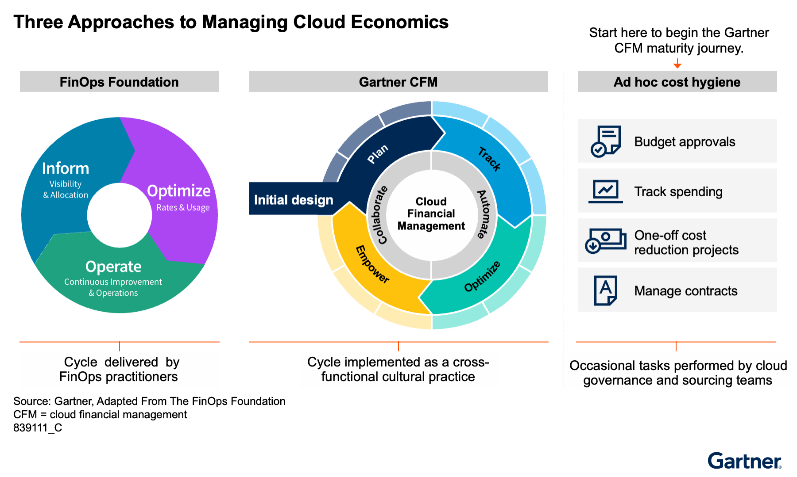

클라우드 비용 관리는 모두에게 필요하다. 그러나 지속형 FinOps는 조건이 맞을 때만 투자 근거가 선다. 핵심은 도입 여부가 아니라 셀프서비스, 변동성, 복잡성을 얼마나 다뤄야 하느냐다.
핵심 요약
클라우드 비용을 아끼려면 FinOps가 필수라는 인식이 널리 퍼져 있다. 그러나 가트너는 모든 조직에 지속형 CFM이 맞지는 않다고 본다. I&O 책임자는 셀프서비스 사용, 동적 변화, 운영 복잡성이 큰지부터 따져 사업 근거를 세워야 한다. 클라우드 비용 거버넌스는 기본이고, 지속형 FinOps는 선택 과제다.
문제 맥락
원문 그대로
과거에 전혀 통제되지 않던 셀프서비스 클라우드 사용을 한 번 정리하면 첫해에 비용을 40% 줄이는 일은 드물지 않다.
공용 클라우드 IaaS나 PaaS를 쓰는 조직은 모두 클라우드 비용 거버넌스와 기본 비용 관리를 해야 한다. 하지만 많은 조직은 지속형 CFM, 흔히 FinOps라 부르는 방식까지 할 사업 근거를 갖고 있지 않다. 과거에 통제 없이 쓰던 셀프서비스 클라우드를 한 번 정리하면 첫해 비용을 40% 줄이는 일은 드물지 않다. 그러나 무질서한 도입이 멈추고 새 낭비가 줄어든 뒤에는, 그다음 해부터 FinOps 투자에 대한 긍정적 ROI를 입증하기가 어렵다.
이 대목 전문 펼치기
모든 조직이 공용 클라우드 IaaS나 PaaS를 도입했다면 클라우드 비용 거버넌스와 기본 비용 관리는 수행해야 한다. 그러나 많은 조직은 지속형 클라우드 재무관리, 즉 흔히 ‘FinOps’라고 부르는 방식까지 할 사업 근거를 갖고 있지 않다.
조직이 과거에 전혀 통제하지 않던 셀프서비스 클라우드 사용을 한 번 정리하면, 첫해에 비용을 40% 줄이는 일은 드물지 않다. 그러나 통제 없는 클라우드 도입을 멈추고 새 낭비가 줄어든 뒤에는, 이후 해에 FinOps 투자에 대한 긍정적 ROI를 입증하기가 어려울 수 있다.
가트너가 권하는 CFM 접근에는 전담 FinOps 팀이 없다. 대신 지속형 CFM 주기에는 여러 기능에 퍼져 있는 사람들이 파트타임으로 참여한다. 다만 FinOps 실행 업무의 상당 부분은 I&O에 있다.
클라우드 비용 최적화 노력에서 기대할 수 있는 ROI와 실제 실현되는 ROI는 조직마다 크게 다르다. 조직의 사업 특성, 내부 문화 특성, 클라우드 도입 특성이 과도한 비용이 얼마나 발생하는지와 얼마나 줄일 기회가 있는지에 영향을 주기 때문이다. FinOps 비용이 절감액보다 더 클 수도 있다.
지속형 CFM 주기는 IaaS나 PaaS를 셀프서비스로 쓰는 팀이 많거나, 사용량이 예측하기 어렵고 동적으로 바뀌는 대형 애플리케이션이 있을 때 적합하다. 이런 조건이 없으면 매력적인 사업 근거를 만들기 어렵다.
영향
원문 그대로
지속형 CFM은 IaaS나 PaaS를 셀프서비스로 쓰는 팀이 많거나, 사용량이 예측하기 어렵고 동적으로 바뀌는 대형 애플리케이션이 있을 때 적합하다.
많은 I&O 책임자는 클라우드 비용 예산을 여전히 맡고 있다. 그래서 비용 통제 압박도 같이 받는다. 하지만 가트너는 인증 인력으로만 구성된 전담 FinOps 팀을 거의 권하지 않는다. 비용 관리는 애플리케이션 소유자, 개발·운영 조직, 클라우드 엔지니어, 아키텍트가 함께 맡는 교차 기능 과제이기 때문이다.
지속형 CFM이 특히 필요한 경우는 세 가지다. 첫째, 개발자나 데이터 사이언티스트가 승인 절차 없이 셀프서비스로 클라우드를 많이 쓰는 경우다. 둘째, 개별 애플리케이션이 사업 상황에 따라 클라우드 자원을 크게 바꾸며 쓰는 경우다. 셋째, 수백 개 이상 계정과 2개 이상 클라우드 공급자를 함께 쓰는 고복잡도 멀티클라우드 환경이다.
이 대목 전문 펼치기
인프라·IT 운영 책임자는 공용 클라우드 IaaS와 PaaS의 비용 관리로 늘 어려움을 겪는다. 많은 조직에서 이 비용 예산은 여전히 I&O가 쥐고 있다. 데이터센터 예산의 일부이거나 그와 관련된 비용으로 보기 때문이다. 클라우드 사용이 I&O의 통제 아래에 완전히 있지 않더라도, I&O 책임자는 클라우드 비용과 클라우드 도입의 재무 성과에 책임을 지는 경우가 많다.
그래서 I&O 책임자는 클라우드 비용을 억제하라는 압박을 크게 받는다. FinOps라는 말이 시장에서 강하게 홍보되다 보니, 많은 I&O 책임자는 자기 조직도 전담 FinOps 팀과 FinOps 도구를 갖추고 이 프로세스를 돌려야 한다고 자동으로 가정하곤 한다. 그러나 가트너는 이 접근을 거의 권하지 않는다.
가트너는 고객 경험을 바탕으로 다음을 확인했다. 모든 조직은 교차 기능 실무로서 클라우드 이코노믹스를 관리해야 한다. 클라우드 이코노믹스는 클라우드 컴퓨팅의 사업 가치를 극대화하는 데 초점을 둔다. 조직의 클라우드 거버넌스 팀, 예를 들어 CCOE가 전체 실무의 감독과 조정을 맡아야 한다. 그러나 완전히 성공적인 관리는 애플리케이션 사업 오너, 애플리케이션 개발자나 유지보수 담당자, 클라우드 엔지니어, 클라우드 아키텍트의 협업이 있어야 한다. 참여하는 모든 쪽이 이 문제에 대한 주인의식을 느끼고, 충돌하는 우선순위를 관리하겠다는 의지가 있어야 한다.
모든 조직이 지속형 종단간 CFM의 사업 근거를 갖는 것은 아니다. 이 전체 주기를 수행하려면 시간, 노력, 비용의 지속적 투자가 많이 든다. 배치가 비교적 정적인 많은 조직은 지속형 CFM의 사업 근거가 부족하다. I&O를 포함한 팀은 지속형 비용 최적화보다 더 중요한 다른 사업 우선순위를 가질 수 있다.
FinOps를 전담 팀 하나의 책임으로 두면 안 된다. 일부 벤더는 인증된 FinOps 실무자로 구성된 전담 팀 사용을 권한다. 하지만 이 방식은 비용이 많이 들고, 교차 기능 실무보다 효과도 떨어진다. I&O가 지속형 CFM 전체를 혼자 책임질 수도 없고, 그래서도 안 된다. I&O 책임자는 이 함정을 피해야 한다. 다만 클라우드 비용 최적화에 집중하는 교차 기능 위원회나 가상 팀을 두는 것은 유용할 수 있다. 초기 도입을 밀어붙일 때는 FinOps ‘타이거 팀’을 쓰는 경우가 많다.
조직은 지속형 CFM을 구현하지 않더라도 그 일부 요소는 수행할 수 있다. 대부분의 조직은 기본적인 클라우드 비용 거버넌스와 관리를 해야 하며, 때때로 일회성 최적화 활동도 필요할 수 있다. 이런 기본 비용 위생이 CFM 성숙도 여정의 첫 단계다.
모든 조직이 FinOps 도구를 구매할 필요도 없다. 특히 단일 클라우드 공급자에 연간 100만 달러 미만을 쓰는 조직은 공급자가 기본 제공하는 비용 관리 기능만으로도 충분한 경우가 많다. 이 기능은 대개 무료다. FinOps 도구는 보통 고객의 클라우드 지출 비율로 가격을 매긴다. 그래서 지출에 붙는 지속적 ‘세금’처럼 작동한다. 비용 절감 행동을 할 준비가 되지 않은 고객에게는 총소유비용을 낮추기보다 처음에는 오히려 높일 수 있다.
클라우드 워크로드가 작고 정적이거나, 전적으로 I&O만 관리한다면 FinOps, 또는 일반적인 클라우드 비용 최적화는 긍정적 ROI를 거의 내지 못한다.
I&O 책임자가 지속형 CFM의 사업 근거를 가질 가능성이 큰 경우는 적어도 다음 가운데 하나가 있을 때다.
클라우드 셀프서비스 개발자나 데이터 사이언티스트 같은 기술 사용자가 서비스 카탈로그 같은 승인 메커니즘 없이 클라우드 서비스에 직접 셀프서비스로 접근하는 경우다. 클라우드 설계, 프로비저닝, 설정의 상당 부분이 I&O의 지식과 통제 밖에서 이뤄진다. 그래서 거버넌스, 관리, 최적화를 위해 지속형 CFM이 필요하다.
대규모 동적 애플리케이션 개별 애플리케이션이 예측하기 어렵게 상당한 클라우드 자원을 소비하는 경우다. 사용량은 사업 요인과 연결돼 있다. 릴리스도 자주 이뤄지고, 릴리스 하나가 성능 특성을 바꿔 사용량까지 달라지게 할 수 있다. 이런 애플리케이션은 비용을 의식한 점진 설계, 비용 최적화, 성능 엔지니어링, 단위경제 분석의 혜택을 받는다. 이런 혜택은 지속형 CFM을 통해 가장 잘 제공된다.
고복잡도 전사 멀티클라우드 도입 수백 개 또는 수천 개의 클라우드 계정을 가진 글로벌 기업이 여기에 해당한다. 대개 최소 2개 이상의 클라우드 IaaS·PaaS 공급자에 걸쳐 있다. 직접적인 셀프서비스가 없더라도 계정은 개별 팀이나 애플리케이션에 정렬돼 있다. 이런 상황에서는 기본적인 비용 거버넌스와 관리 활동조차 상당한 시간과 주의가 필요하다. 그래서 이를 지속적으로 수행해야 하며, CFM 프레임워크로 조직하는 편이 낫다.
지속형 CFM이 모든 클라우드 환경을 포함할 필요는 없다. 예를 들어 동적이고 예측이 어려운 환경만, 또는 셀프서비스 데이터 사이언스 환경만, 또는 지속형 CFM의 사업 근거가 성립하는 다른 계정만 대상으로 할 수 있다.
CFM에는 도구와 인력 시간에 대한 선행 투자와 지속 투자가 모두 필요하다. 비용 최적화 모드가 아니라 비용 회피 모드에 있는 조직의 I&O 책임자는, 이 투자가 가치 있다는 점을 CFO에게 설득하기 더 어려울 수 있다. 유휴 자원과 저활용 자원을 정리하는 일회성 작업은 비용 정당화가 쉽다. 그러나 그런 정리로 비용 회피를 달성한 뒤에는, 지속 투자를 정당화하기가 더 어렵다. CFM의 이점도 더 덜 눈에 보일 수 있다. 클라우드 도입 환경이 바뀌면 지속형 CFM의 사업 근거를 다시 평가해야 한다.

크게 보기The FinOps Foundation's inform-optimize-operate model, the Gartner CFM plan-track-optimize-empower cycle, and Gartner's model for basic cost hygiene.
The FinOps Foundation's inform-optimize-operate model, the Gartner CFM plan-track-optimize-empower cycle, and Gartner's model for basic cost hygiene.
닫기시사점
원문 그대로
도구가 제대로 구현되고 나면, 추가 비용 절감은 보통 더 높은 클라우드 전문성을 요구하므로 지속형 CFM의 사업 근거가 좋아지기보다 나빠질 수 있다.
지속형 CFM의 사업 근거가 없더라도 비용 거버넌스와 일회성 최적화는 여전히 필요하다. 클라우드 환경이 정적일수록 온프레미스 인프라에 쓰던 재무 프로세스로도 지출 관리가 가능하다. 다만 모든 조직은 클라우드 수요 관리, 신규 프로젝트 예산 승인, 공급자별 지출 추적, 계약·할인 협상을 해야 한다.
기본 비용 위생은 자동화 도구로 상당 부분 처리할 수 있다. 유휴 자원 회수나 업무시간 외 개발·테스트 환경 중지는 대표적이다. 이런 자동화가 자리를 잡으면, 이후의 추가 절감은 더 높은 클라우드 전문성을 요구한다. 그래서 지속형 FinOps의 투자 매력은 오히려 낮아질 수 있다.
과도한 클라우드 비용은 기술 부채의 한 형태로 보고 우선순위를 매겨야 한다. 예약 인스턴스나 세이빙 플랜 공동 구매, 고비용 애플리케이션 성능 개선, 클라우드 네이티브 전환 같은 일회성 과제는 별도 사업 근거로 판단할 수 있다.
이 대목 전문 펼치기
지속형 CFM의 사업 근거가 없더라도, 클라우드 비용 거버넌스와 일회성 비용 최적화 활동은 여전히 도움이 된다.
클라우드 환경이 정적일수록, 온프레미스 인프라에 쓰던 재무 프로세스로도 클라우드 지출을 관리하기에 충분할 가능성이 크다. 그러나 모든 조직은 클라우드 비용 거버넌스와 기본 비용 관리를 통해 다음을 해야 한다. 클라우드 수요 관리 새 클라우드 프로젝트에 승인된 예산이 있는지 확인 각 클라우드 공급자에 대한 조직의 지출 추적 조직의 소싱·조달·벤더관리 팀을 통해 클라우드 계약과 할인을 중앙에서 협상
I&O 책임자는 대개 클라우드 비용 관리의 기술 구현을 통제한다. 그리고 수작업 개입이 필요 없는 기본 비용 위생은 도구 기반 자동화에 의존할 수 있다. 예를 들어 도구는 유휴 자원을 회수해 과금을 멈추게 할 수 있다. 업무시간 밖에는 개발·테스트 환경을 최대 절전 상태로 둘 수도 있다. 실제로 이런 도구가 제대로 구현되고 나면, 지속형 CFM 활동의 사업 근거는 좋아지기보다 나빠질 수 있다. 추가 비용 절감에는 보통 더 높은 수준의 클라우드 전문성이 필요하기 때문이다.
과도한 클라우드 비용은 기술 부채의 한 형태다. 다른 기술 부채와 함께 추적하고, 우선순위를 정해 해소해야 한다.
지속형 CFM을 하든 하지 않든, 다음과 같은 일회성 클라우드 비용 최적화 활동은 각각의 사업 근거를 따져 볼 수 있다. 예약 인스턴스나 세이빙 플랜 같은 프로그램형 할인을 조직 차원에서 공동 구매하기. 이를 위해 일회성 최적화 프로그램을 둘 수 있다. 클라우드 사용량이 높은 특정 애플리케이션의 성능 최적화 특정 애플리케이션을 더 클라우드 네이티브한 방식으로 고쳐 총소유비용을 낮추기